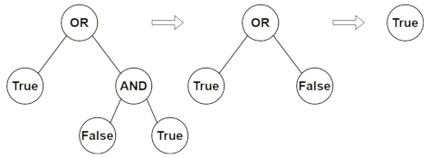

Assignment 2
There are 16 questions in all, 7 of which are tagged as [PY]. You are required to submit solutions to only 10 questions, 5 of which should have been tagged as [PY].
Solutions to the questions tagged as [PY] shall be a python function. Other questions are more conceptual in nature, and their solutions may be an algorithm/ pseudocode/ python function, as per your discretion.
For submission details, click here.
Question 1
Given the following undirected graph, perform a BFS as well as DFS starting from vertex \(A\). List the order in which the vertices are visited.
\(\{A-B,\; A-C,\; B-D,\; C-D,\; D-E\}\)
Question 2
Given the following directed graph, algorithmically determine if it is a DAG. If it is not, explain why.
\(\{A\to B,\; B\to C,\; C\to A,\; B\to D\}\)
Question 3
Given the following DAG, algorithmically perform a topological sort.
\(\{A\to B,\; A\to C,\; B\to D,\; C\to D\}\)
Question 4 [PY]
Given a weighted vertex graph \(G(V,E)\), a start node \(s\) and a target sum \(\sigma\).
Write an algorithm, or equivalently a python program (WAP) to inspect if there is a path from \(s\) such that adding up all the vertex weights along the path, equals the target sum.
Note: \(\forall v \in V\; \exists v.w\) that represents vertex weights.
Question 5
WAP to traverse a binary tree using BFS. Illustrate with necessary examples.
Question 6 [PY]
Given two binary trees, \(A,B\), WAP to compute a merge operation defined as follows:
Imagine that one is put on to cover the other; some nodes overlap, while others don’t. The merge rule states that for each position in the binary tree, if two nodes overlap, the value of the merged node is their sum; otherwise, it’s the value of not null node. E.g.

Question 7
If the following paths completely describe a given undirected graph, show one possible order of nodes visited through BFS.
\(M-N-O-P-Q\)
\(N-Q-M-R\)
Question 8
Given a binary tree, \(B\) find its min, max and average depths.
PS: Depth of a tree is defined by the distance of leaf nodes from the root, not that of any intermediary nodes.
Question 9 [PY]
Given an image \(M\in\mathbb{Z}^{H\times W}\) represented as a grid (or matrix) of \(H\times W\) of integers, where \(m_{ij}\) represents the pixel value of \(i\)-th row, \(j\)-th column.
-
WAP to flood-fill colour \(\kappa\) starting at pixel at \(r\)-th row and \(c\)-th column.
-
Reflect on the relative merits of using BFS/DFS for the process.
Flood Fill
- Flood fill is a process to change the colour of a contiguous region, by starting with a given source pixel and expanding along the neighbours until a boundary is hit.
- Region is defined by colour of the start pixel.
- Neighbours shares a boundary (either vertically or horizontally).
- A neighbour with colour different than that of the start pixel is deemed to be a boundary; it’s colour is left untouched!
Question 10
Given an undirected graph \(G(V,E)\) without self-loops, and a pair \((s,d)\) of source and destination vertices, determine if a path between them exists in the graph.
Question 11 [PY]
Evaluate a Boolean Binary Tree
Given a full binary tree \(B\) such that,
- Leaf nodes bear binary truth values, i.e.
TrueorFalse; and - Non leaf nodes bear values that represent logic
gates, namely
ANDorOR.
WAP to evaluate the boolean binary tree \(B\) and return the result.

Question 12 [PY]
Island Perimeter
Given a binary rectangular grid \(M\in\{0,1\}^{H\times W}\) with \(H\) rows and \(W\) columns, where each pixel \(m_{ij}\) represents either \(0\) for water or \(1\) for land. Assume that
- There’s exactly one island (contiguously connected land cells);
- Pixels are connected either vertically or horizontally but not diagonally; and
- There are no lakes.
WAP to determine the perimeter of the island!
Question 13 [PY]
Given \(N\) courses labelled \(\{0,\ldots,N-1\}\) and a list of prerequisites \(R\) such that the courses \(R[i]\equiv\{a_i,b_i,\ldots\}\) are required to be completed before enrolling for \(i\)-th course.
WAP to determine if all the \(N\) courses can be completed successfully by a candidate. If so, also determine one of the feasible ordering of courses.
Examples
- \(N=2\), \(R=[\emptyset,\{0\}]\) means that course \(1\) requires course \(0\) as pre-requisite. Hence, it is possible to complete the courses, in the following order: \([0,1]\).
- \(N=2\), \(R=[\{1\},\{0\}]\). Here, the requirement is \(1\) before \(0\); and also \(0\) before \(1\). This, hence, is impossible.
Question 14
Given a DAG \(G(V,E)\), WAP to determine the list of ancestors for each node.
Question 15 [PY]
There are \(N\) cities, connected by flights. Given the list of flights \(F\equiv\{(s_i,d_i,p_i):0<i\leqslant N\}\) so that \(i\)-th flight connects the source city \(s_i\) to destination city \(d_i\) for a cost-price of \(p_i\).
Given \(A,B,k\), WAP to determine the cheapest price to connect city \(A\) to city \(B\) with maximum \(k\) stops.

Examples (Optimal paths marked in red)
- \(N=4, F\equiv\{ (0,1,100), (1,2,100), (2,0,100),
(2,3,200) \}, A=0, B=3, k=1\)
Result: \(700\) - \(N=3, F\equiv \{ (0,1,100), (1,2,100), (0,2,500) \},
A=0, B=2, k=1\)
Result: \(200\) - \(N=3, F\equiv \{ (0,1,100), (1,2,100), (0,2,500) \},
A=0, B=2, k=0\)
Result: \(500\)
Question 16
There’s a dungeon arranged as a grid of \(N\times M\) rectangular rooms.
\(T\in\mathbb{Z}^{N\times M}\) represents for each room \((i,j)\), a threshold of minimum time \(t_{ij}\) starting from which a move into it may be initiated.
Move is allowed only between two adjacent rooms that share a common vertical or horizontal wall, and each move takes 1 unit time duration.
WAP to start from room \((0,0)\) and finally determine the minimum time required to reach the room \((N-1,M-1)\).
Examples
- \(T=[[0,4],[4,4]]\)
Result: \(6\)
Explanation:
\(t=4: (0,0)\to(1,0)\);
\(t=5: (1,0)\to(1,1)\). - \(T=[[0,0,0],[0,0,0]]\)
Result: \(3\)
Explanation:
\(t=0: (0,0)\to(1,0)\);
\(t=1: (1,0)\to(1,1)\);
\(t=1: (1,1)\to(1,1)\). - \(T=[[0,1],[1,2]]\)
Result: \(3\)
Explanation:
\(t=1: (0,0)\to(1,0)\);
\(t=2: (1,0)\to(1,1)\).
Submission Details
[TODO]
Glossary
Loop
An edge from a vertex to its own self.
Binary Tree
A directed graph, where
- There’s a fixed start node called root;
- Each node may have upto two children; and
- The node with no children is called a leaf.
Full Binary Tree
A binary tree where each node has either two or no children
DAG
(Directed Acyclic Graph)
A directed graph, where there are no back-edges.